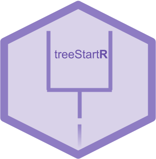
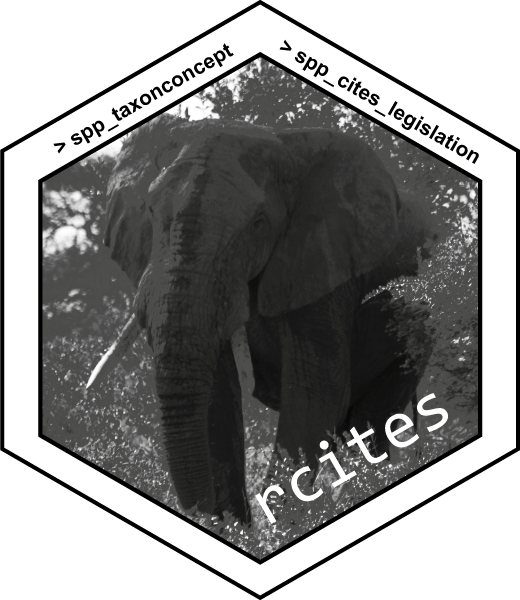
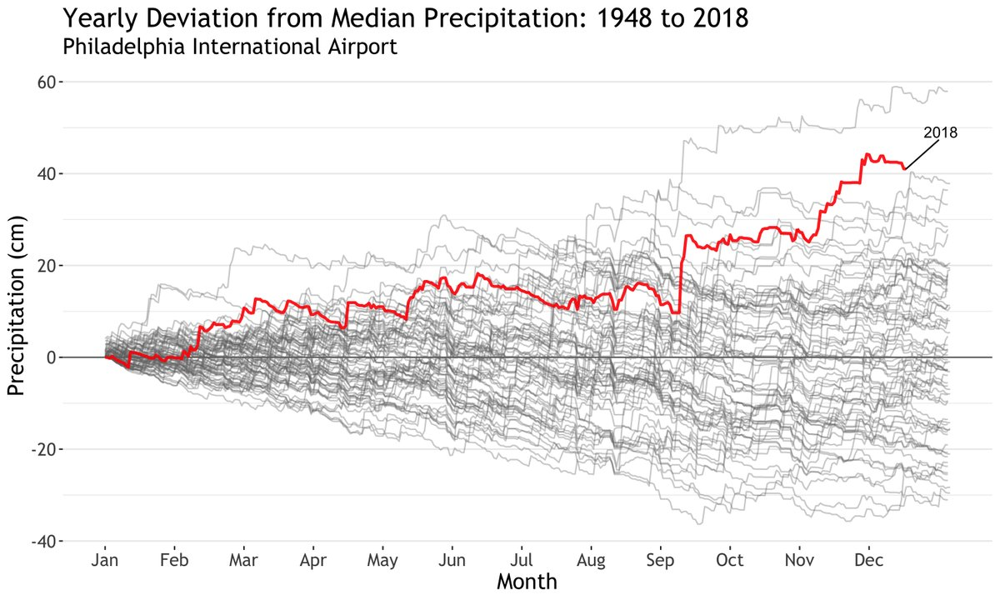

Jan 8, 2019
rOpenSci HQ
We’ve rolled out a change on our website to facilitate exploring blog posts by authors. There’s a landing page for all authors at https://ropensci.org/authors/ that lets you easily navigate to posts by each author. In addition, at the bottom of each blog post you’ll find a link to more content by each author. On the page for each author (e.g., https://ropensci.org/authors/kelly-obriant/) you’ll find a link to their website. Huge thanks to Maëlle Salmon for all the work on this 🚀
Software 📦
CRAN:  GitHub:
GitHub: 
New packages
- The first version (
v0.6.0) ofrdhsis on CRAN - Client for Demographic and Health Survey (DHS) Data. Checkout the docs to get started. Find the software review at https://github.com/ropensci/software-review/issues/238

New versions
- A new version (
v0.2.7) ofstplanris on CRAN - sustainable transport planning. See the release notes for changes. Checkout the docs to get started.
changes for dplyr compatability; bug fix
- A new version (
v1.7.4) ofneotomais on CRAN - access the Neotoma Paleoecological Database. See the release notes for changes. Checkout the vignette to get started.
get_datasetbug fix; fix to allowable dataset types - A new version (
v0.7.0) ofcrulis on CRAN - an R6 based HTTP client for R made for developers. See the release notes and expanded release notes for changes. Checkout the docs to get started.
gains retry, verb, and url_fetch methods; new best practices vignette; now get intermediate response headers
- A new version (
v0.3.2) ofworrmsis on CRAN - client for World Register of Marine Species. See the release notes for changes. Checkout the vignette to get started.
fix hard coded date in a test
- A new version (
v0.3.0) ofcRegulomeis on CRAN - access, manage and visualize regulome (microRNA/transcription factors)-gene correlations in cancer. See the release notes for changes. Checkout the vignettes to get started.
bug fix, changes to
cor_igraph,get_tfandget_mir - A new version (
v1.7.5) ofRSeleniumis on CRAN - R client for Selenium Remote WebDriver. See the release notes for changes. Checkout the docs to get started.
fix
switchToWindowissue in Firefox; new tutorial for running in IE - A new version (
v0.3.2) oftaxais on CRAN - taxonomic classes for groupings of taxonomic names without data, and those with data. See the release notes for changes. Checkout the vignette to get started.
parsers now correctly handle zero length inputs; improvement to
parse_tax_dataparamclass_col - A new version (
v1.3.1) ofGSODRis on CRAN - Global Surface Summary of the Day (GSOD) Weather Data from R. See the release notes for changes. Checkout the docs to get started.
fixed non-running examples; update internal DB of station locations
- A new version (
v0.0.9) ofosmdatais on CRAN - import OpenStreetMap data as simple features or spatial objects. See the release notes for changes. Checkout the docs to get started.
new fxn
osmdata_sc();osmdataobject modified;add_osm_feature()andosmdata_sf()changes - A new version (
v0.3.2) ofosmplotris on CRAN - Bespoke Images of OpenStreetMap Data. See the release notes for changes. Checkout the docs to get started.
verboseparam ofextract_osm_objects()renamed toquiet - A new version (
v0.7.6) ofritisis on CRAN - an R client for ITIS (Integrated Taxonomic Information Service). See the release notes for changes. Checkout the vignette to get started.
improve docs for solr fxns; fix
search_anymatch()bug - A new version (
v2.0) ofspellingis on CRAN - tools for spell checking. See the release notes for changes. Checkout the README to get started.
spell_check_package()now checks README & NEWS; treat all input as UTF-8 - A new version (
v3.0) ofhunspellis on CRAN - High-Performance stemmer, tokenizer, and spell checker. See the release notes for changes. Checkout the vignette to get started.
update bundled libhunspell to v1.7; add RStudio directory to the search path to use dictionaries installed via the RStudio IDE
- A new version (
v0.8.6) ofboldis on CRAN - interface to Bold Systems (http://www.boldsystems.org/) API. See the release notes for changes. Checkout the vignette to get started.
now using
vcrfor test caching;bold_seq()fixes: remove return chars, band-aid for large request time-outs - A new version (
v0.2.17) ofrglobiis on CRAN - R Interface to Global Biotic Interactions. See the release notes for changes. Checkout the vignette to get started.
use
utils::download.fileto avoid intermittent download issues on debian - A new version (
v1.0.2) ofsolriumis on CRAN - general purpose R interface to Solr. See the release notes for changes. Checkout the vignettes to get started.
progressparam added to search fxns supportinghttr::progress(); new methodjson_requestfor Solr JSON request API; returningresponseHeader&nextCursorMarkwhen avail. - A new version (
v0.3.6) ofjstoris on CRAN - read data from JSTOR/DfR. See the release notes for changes. Checkout the docs to get started.
fix compatibility with readr v1.3.0 and tibble v2.0.0
- A new version (
v1.3.0) ofskynetis on CRAN - Bureau of Transport Statistics Data client. See the release notes for changes. Checkout the vignette to get started.
new fxn
download_t100() - A new version (
v2.0) ofpdftoolsis on CRAN - Text extraction, rendering and converting of PDF documents. See the release notes for changes. Checkout the README to get started.
update
popplerto 0.72.1; enablepdf_data()on systems >= 0.72.1 - A new version (
v6.2.1) ofdrakeis on CRAN - a pipeline toolkit for reproducible computation at scale. See the release notes for changes. Checkout the docs to get started.
fixes for cran checks
- A new version (
v0.1.0) ofprismis on CRAN - Data from the Oregon State Prism Climate Project. See the release notes for changes. Checkout the vignette to get started. First version under new maintainer Alan Butler
new fxns
del_early_prov,get_prism_station_md;get_prism_dailysgains paramcheck; many bug fixes - A new version (
v0.5.2) ofvisdatis on CRAN - create preliminary exploratory data visualisations of an entire dataset to identify problems or unexpected features using ggplot2. See the release notes for changes. Checkout the docs to get started.
Software Review ✔
We accept community contributed packages via our onboarding system - an open software review system, sorta like scholarly paper review, but way better. We’ll highlight newly onboarded packages here. A huge thanks to our reviewers, who do a lot of work reviewing (see the blog post on our review system), and the authors of the packages!
If you want to be a reviewer fill out this short form, and we’ll ping you when there’s a submission that fits in your area of expertise.
The following package was recently submitted:
- tradestatistics > Open Trade Statistics API Wrapper and Utility Program
- Author: Mauricio Vargas
- Issue: ropensci/onboarding#274
- Reviewers:
On the blog
Software Review
April Wright wrote about her recently rOpenSci reviewed package treestartr, for automated generation of starting trees for total-evidence phylogenetic analyses. Generating reasonable starting trees for complex phylogenetic analyses

Ignasi Baromeus, Kevin Cazelles, and Jonas Geschke wrote about their recently rOpenSci reviewed package rcites for accessing the CITES Speciesplus database. rcites - The story behind the package

tech notes
Jeroen Ooms wrote about a new major release of the pdftools package, with two major improvements: low level text extraction and encoding improvements. pdftools 2.0: powerful pdf text extraction tools
Jeroen Ooms wrote about a new major release of the spelling package, including automatic checking of README and NEWS files, improved Markdown parsing, and more. Spelling 2.0: Improved Markdown and RStudio Support
Use cases
The following 21 works use/cite rOpenSci software:
- West et al. used rfishbase in their paper Improving consumption based accounting for global capture fisheries 1
- Antão et al. used ecoretriever in their paper β‐diversity scaling patterns are consistent across metrics and taxa 2
- Blankers et al. used RSelenium in their paper 4-Fluoramphetamine in the Netherlands: Text-mining and sentiment analysis of internet forums 3
- O’Dea et al. used rotl in their paper Developmental temperature affects phenotypic means and variability: a meta-analysis of fish data 4
- Teixeira & Derudder wrote a paper about their package skynet SKYNET: An R package for generating air passenger networks for urban studies 5
- Lewis used cld2 in their paper Playing for keeps: a psychological measure of the probability of retaining a free agent in professional basketball 6
- Cholet et al. used rentrez in their paper Differential ratio amplicons (Ramp) for the evaluation of RNA integrity extracted from complex environmental samples 7
- Die et al. used rentrez in their paper GeneHummus: A pipeline to define gene families and their expression in legumes and beyond 8
- Leaf & Oshima used rfishbase in their paper Construction and evaluation of a robust trophic network model for the northern Gulf of Mexico ecosystem 9
- Wong et al. used RSelenium in their article Identifying tweets from Syria refugees using a Random Forest classifier 10
- Tresch et al. used rotl in their paper Litter decomposition driven by soil fauna, plant diversity and soil management in urban gardens 11
- Weismayer & Pezenka used cld2 in their paper Drivers of Emotions in Airbnb-Reviews 12
- Sodnomov et al. used MODIStsp in their conference paper Software for analysis of vegetation indices dynamics 13
- Maia et al. used magick in their paper pavo 2: new tools for the spectral and spatial analysis of colour in R 14
- Liu et al. used pdftools in their paper A text mining analysis of proceedings of the New Zealand Agronomy Society 1971-2017 using Natural Language Processing 15
- Cichosz used hunspell in their paper A case study in text mining of discussion forum posts: classification with bag of words and global vectors 16
- Mubeen used rdflib in their thesis Harmonizing major pathway databases to compare and evaluate their consensus 17
- Mioduchowska et al. used rentrez in their paper Detection of bacterial endosymbionts in freshwater crustaceans: the applicability of non-degenerate primers to amplify the bacterial 16S rRNA gene 18
- Konkolova & Paralic used RSelenium in their conference paper Active Learning in Data Science Education 19
- Rehbach et al. used plotly in their paper Bridging Theory and Practice Through Modular Graphical User Interfaces 20
- Singer et al. used plotly in their paper A survey of digitized data from U.S. fish collections in the iDigBio data aggregator 21
In the news
Matt Harris used rnoaa to visualize yearly deviation from median precipitation from 1948-2018 at the Philidelphia Internaional Airport. Link to code included.
"It seems to rain a lot around here."
— Matt Harris (@Md_Harris) December 17, 2018
I thought to myself at 3am as the wind whipped outside of the window and my sick kid finally fell back asleep. So, what does one do with such a thought? Make a plot!
code: https://t.co/bXjDbT3kYq
Thx @sckottie for rnoaa 📦 pic.twitter.com/Ia97kBi9bI

Keep up with rOpenSci
- Mailing list: Sign up with an email address to get this newsletter sent to your inbox -> ropensci.org/#subscribe
- Alternatively, you can subscribe to this newsletter via our XML feed at https://news.ropensci.org/feed.xml or our JSON feed at https://news.ropensci.org/feed.json
- rOpenSci on Twitter: @ropensci
- The rOpenSci blog at ropensci.org/blog - you can subscribe in any RSS aggregator, or manually via https://ropensci.org/feed.xml. We also announce new blog posts on our Twitter account.
Footnotes
-
West, C. D., Hobbs, E., Croft, S. A., Green, J. M. H., Schmidt, S. Y., & Wood, R. (2018). Improving consumption based accounting for global capture fisheries. Journal of Cleaner Production. https://doi.org/10.1016/j.jclepro.2018.11.298 ↩
-
Antão, L. H., McGill, B., Magurran, A. E., Soares, A., & Dornelas, M. (2018). β‐diversity scaling patterns are consistent across metrics and taxa. Ecography. https://doi.org/10.1111/ecog.04117 ↩
-
Blankers, M., van der Gouwe, D., & van Laar, M. (2019). 4-Fluoramphetamine in the Netherlands: Text-mining and sentiment analysis of internet forums. International Journal of Drug Policy, 64, 34–39. https://doi.org/10.1016/j.drugpo.2018.11.016 ↩
-
O’Dea, R. E., Lagisz, M., Hendry, A. P., & Nakagawa, S. (2018). Developmental temperature affects phenotypic means and variability: a meta-analysis of fish data. https://doi.org/10.32942/osf.io/ge7f8 ↩
-
Teixeira, F., & Derudder, B. (2018). SKYNET: An R package for generating air passenger networks for urban studies. Urban Studies, 004209801880325. https://doi.org/10.1177/0042098018803258 ↩
-
Lewis, M. (2018). Playing for keeps: a psychological measure of the probability of retaining a free agent in professional basketball. https://shareok.org/bitstream/handle/11244/299796/2018_Lewis_Melanie_Dissertation.pdf?sequence=2 ↩
-
Cholet, F., Ijaz, U. Z., & Smith, C. J. (2018). Differential ratio amplicons (Ramp) for the evaluation of RNA integrity extracted from complex environmental samples. Environmental Microbiology. https://doi.org/10.1111/1462-2920.14516 ↩
-
Die, J. V., Elmassry, M. M., Leblanc, K. H., Awe, O. I., Dillman, A., & Busby, B. (2018). GeneHummus: A pipeline to define gene families and their expression in legumes and beyond. https://doi.org/10.1101/436659 ↩
-
Leaf, R. T., & Oshima, M. C. (2019). Construction and evaluation of a robust trophic network model for the northern Gulf of Mexico ecosystem. Ecological Informatics, 50, 13–23. https://doi.org/10.1016/j.ecoinf.2018.12.005 ↩
-
Wong, Patrick, Reel, Smarti, Wu, Belinda, Kouadri Mostéfaoui, Soraya and Liu, Haiming. Identifying tweets from Syria refugees using a Random Forest classifier. In: The 2018 International Conference on Computational Science and Computational Intelligence (CSCI), 13-15 Dec 2018, Las Vegas, USA, IEEE CPS. http://oro.open.ac.uk/58359/ ↩
-
Tresch, S., Frey, D., Le Bayon, R.-C., Zanetta, A., Rasche, F., Fliessbach, A., & Moretti, M. (2018). Litter decomposition driven by soil fauna, plant diversity and soil management in urban gardens. Science of The Total Environment. https://doi.org/10.1016/j.scitotenv.2018.12.235 ↩
-
Weismayer, C., & Pezenka, I. (2019). Drivers of Emotions in Airbnb-Reviews. In Information and Communication Technologies in Tourism 2019 (pp. 67-79). Springer, Cham. https://doi.org/10.1007/978-3-030-05940-8_6 ↩
-
Sodnomov, B. V., Ayurzhanaev, A. A., Tsydypov, B. Z., Garmaev, E. Z., & Tulokhonov, A. K. (2018). Software for analysis of vegetation indices dynamics. IOP Conference Series: Earth and Environmental Science, 211, 012083. https://doi.org/10.1088/1755-1315/211/1/012083 ↩
-
Maia, R., Gruson, H., Endler, J. A., & White, T. E. (2018). pavo 2: new tools for the spectral and spatial analysis of colour in R. https://doi.org/10.1101/427658 ↩
-
Liu, J., Hunt, A., & Jesson, L. 2018. A text mining analysis of proceedings of the New Zealand Agronomy Society 1971-2017 using Natural Language Processing. Agronomy New Zealand. 48: 137-148. https://www.researchgate.net/profile/Adrian_Hunt2/publication/329609150_A_text_mining_analysis_of_proceedings_of_the_New_Zealand_Agronomy_Society_1971-2017_using_Natural_Language_Processing/links/5c11db904585157ac1be2a77/A-text-mining-analysis-of-proceedings-of-the-New-Zealand-Agronomy-Society-1971-2017-using-Natural-Language-Processing.pdf ↩
-
Cichosz, P. (2018) A case study in text mining of discussion forum posts: classification with bag of words and global vectors Int. J. Appl. Math. Comput. Sci., Vol. 28, No. 4, 787–801. https://www.amcs.uz.zgora.pl/?action=paper&paper=1469 ↩
-
Mubeen, S. (2018). Harmonizing major pathway databases to compare and evaluate their consensus. Thesis. https://www.researchgate.net/profile/Sarah_Mubeen/publication/329797710_Harmonizing_major_pathway_databases_to_compare_and_evaluate_their_consensus/links/5c1af55792851c22a33821c8/Harmonizing-major-pathway-databases-to-compare-and-evaluate-their-consensus.pdf ↩
-
Mioduchowska, M., Czyż, M. J., Gołdyn, B., Kilikowska, A., Namiotko, T., Pinceel, T., … Sell, J. (2018). Detection of bacterial endosymbionts in freshwater crustaceans: the applicability of non-degenerate primers to amplify the bacterial 16S rRNA gene. PeerJ, 6, e6039. https://doi.org/10.7717/peerj.6039 ↩
-
Konkolova, V., & Paralic, J. (2018). Active Learning in Data Science Education. 2018 16th International Conference on Emerging eLearning Technologies and Applications (ICETA). https://doi.org/10.1109/iceta.2018.8572219 ↩
-
Rehbach, F., Stork, J., & Bartz-Beielstein, T. (2018). Bridging Theory and Practice Through Modular Graphical User Interfaces. Journal of Multimedia Processing and Technologies, 9(4), 134. https://doi.org/10.6025/jmpt/2018/9/4/134-140 ↩
-
Singer, R. A., Love, K. J., & Page, L. M. (2018). A survey of digitized data from U.S. fish collections in the iDigBio data aggregator. PLOS ONE, 13(12), e0207636. https://doi.org/10.1371/journal.pone.0207636 ↩